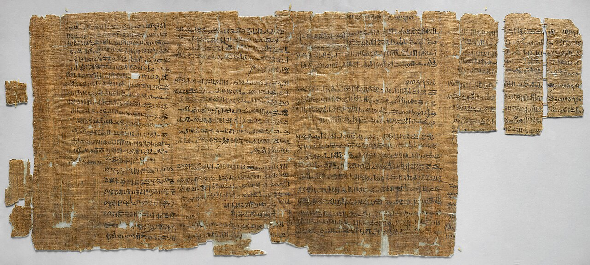

罷工是從什麼時候開始的？
古埃及工匠領不到糧食、十八世紀海員讓船停航，與十九世紀工會的法律地位，分別回答了罷工起源的不同問題。
領不到約定的報酬，一個人可以去催討；如果一整隊人都不再工作，事情會怎麼改變？三千多年前，替法老修建陵墓的工匠，就曾集體離開工作區域。今天稱為罷工的行動、英文 strike 這個名稱，以及依法組織的權利，卻各有不同的歷史。
一、替法老工作，報酬卻沒有送來
約公元前十二世紀，埃及西底比斯的代爾麥地那，住著建造與裝飾王室陵墓的工人及家屬。他們是一支由國家管理的專門隊伍，工作與物資供應都有書記留下紀錄。報酬主要以穀物支付，遲發不只是帳面上少一筆錢，也會直接影響一家人的食物與日用物資。拉美西斯三世在位第二十九年，反覆遲到的配給引發了集體停工。今天能追查這段經過，是因為相關記事保存在都靈埃及博物館的第1880號紙草中。
埃及學者 Jenny Cromwell 整理的譯注顯示，這場爭議發生之前，書記阿蒙納赫特就曾記下工人未領到配給的情況。他到霍倫海布神廟取得穀物，先給隊伍應急。這份較早的記事寫在另一件陶片上，與後來的停工紙草共同呈現出工人曾經歷的供應困難。把兩者接著讀，可以看見停工之前已經有人交涉與設法補給。集體離開工作區域，是在既有供應安排持續出問題的背景下發生。

二、停下來之後，還得讓對方聽見
在紙草的第一則停工記事中，工人越過警戒哨表示自己蒙受難以忍受的飢餓，然後在圖特摩斯三世的祭廟後方坐下。書記、領班與維持秩序的人員先後出面，要求他們回歸崗位。工人離開原本受管理的工作區域，把欠發物資的問題帶到官員必須回應的場合。他們不只停止了工作，還集體移動並提出要求，讓官員直接面對他們的處境。記錄也讓人看見，雙方在停工之後仍持續交涉。
兩天後，隊伍又到拉美西斯二世的祭廟，要求把缺少糧食、衣物、油、魚與蔬菜的情況傳達給法老及宰相。部分配給隨後送達，卻沒有結束所有爭議。接下來的記事仍有離開工作區域、拒絕返回，以及官員設法提供臨時糧食的情節。紙草最後一則停工記錄，也是為了要先取得一批維生穀物。它保存的是反覆停工、交涉與補給的過程，也讓我們得以追查工人如何應對持續的欠發問題。
三、英文 strike，為什麼和船有關？
把勞動義的英文 strike 放回十八世紀，場景就從陵墓工地換成港口。1768年，英國海員曾藉由降下船帆等方式阻止船隻出航，要求增加工資。strike 原本就有降下船帆的用法，因此這個實際動作，成為解釋勞動用詞來源的重要線索。研究1768年倫敦停工的 Dermot Feenan 指出，東北港口的海員先採取類似行動，倫敦海員隨後也讓航運受阻。港口的要求還透過遊行、請願與邀集其他工種參與而擴大。
詞源辭典 Etymonline 將「拒絕工作以迫使雇主回應要求」的動詞義列在1768年，但對詞義如何形成，仍並列降下工具、施壓及海員降帆等可能來源。同一詞條把集體停工的名詞義列在1810年。動詞、名詞與具體行動的記錄，本來就可能出現在不同時間。因此，可以說1768年是追查英文勞動用詞的重要年份，卻不能把它寫成人們第一次集體停工的年份。名稱的歷史，回答的是人們何時開始這樣稱呼一種行動。
四、一起停工，怎麼形成壓力？
港口的例子，讓集體停工的影響比較容易理解。船員不出航、搬運工不卸貨，受影響的就不只是某個人的工作時數，還有整個貨物運送體系能否繼續運作。Feenan整理的1768年倫敦事件中，煤炭搬運工與海員各有雇用和報酬問題，行動卻一度共同妨礙泰晤士河貿易。這種相互連動，使原本分散的薪資要求成為更難忽略的問題。停下某個必要環節，是把對日常生產與運輸的參與，轉成談判時可以使用的力量。
但參與同一波行動的人，利益並不永遠一致。當雇用者找來替代勞力，或部分工種先取得協議、恢復工作，其他人的處境也會改變。1768年的事件中，既有不同工種的合作，也有工人與替代勞力之間的衝突，以及致命暴力和國家鎮壓。理解這段歷史，需要分開看誰參與、誰能持續承擔停工，以及誰先得到回應。只用一場整齊團結的勝利來概括，便會漏掉集體行動內部的分歧與代價。
五、做得到，不等於法律已經承認
一起不工作，還牽涉另一個問題：法律如何看待人們事先約好採取行動？十九世紀英國的工會爭議，就曾圍繞結社是否妨礙交易、集體約定能否成立等問題展開。1871年英國《工會法》第二條規定，不能僅因工會宗旨限制交易，便把它視為非法，進而使成員受到共謀等刑事追訴。第三條也處理相同理由對協議或信託效力的影響。這些條文使工會的合法性，不再僅由它是否限制交易來決定；具體行動採用的手段，仍須分案判斷。
1875年《共謀與財產保護法》第三條，又針對雇主與工人的勞資爭議，規定一個人做來不構成犯罪的行為，不因兩人以上約定去做，就能以共謀起訴。同條仍保留暴動、非法集會等其他法律的適用。這項改變有助理解，集體行動為什麼需要處理「一起做」所增加的法律風險。組織能否存在、哪些約定能成立、行動手段是否違法，是彼此相關卻不同的問題。理解這些法律變化，必須留在十九世紀英國的爭議脈絡中；今天各地的罷工條件，則有各自的法律規範。
六、問起源時，我們究竟想知道什麼？
回頭看，古埃及紙草提供的是一件保存下來、可逐段追查的早期停工記錄。1768年的港口事件，則幫助解釋英文 strike 如何取得勞動意義；十九世紀法律改革，又涉及集體組織與行動的承認。三者放在同一篇歷史裡，可以比較停止工作的作用，至於彼此是否有方法上的傳承，則需要另外的證據。人們在不同的勞動與政治條件中，都可能用停止工作提出要求；要說明具體行動，仍得回到各自的參與者、關係與記錄。找出早期證據，和證明世上第一次發生，是不同的工作。
因此，看到一場罷工，除了追問它從何而來，也可以看人們原本靠什麼協議一起工作。報酬、供應、工作條件或發言管道出了問題時，他們先試過哪些方法，又為什麼改用共同停下來表達？誰有能力等待，誰必須繼續工作，會影響行動能走多遠。這些問題把注意力放回具體關係，而不是只替一種抗爭找一個遙遠的祖宗。從留下的記錄出發，才能理解不同時代的人，如何把各自的不滿變成需要共同回應的要求。
查證資料來源7 項
早期停工記錄、英文詞源與十九世紀英國法律分開閱讀；歷史原始法條不作今天各地的法律建議。
- Turin Strike Papyrus，Museo Egizio ↗
支持內容：第1880號紙草、書記與工人聚落；事件以拉美西斯三世在位第二十九年定位。
- The First Recorded Strike in History，Jenny Cromwell，2022-03-15 ↗
支持內容：陶片與紙草各段譯注、穀物報酬、反覆停工及臨時補給。
- The Birth of the Strike，Dermot Feenan，Tribune，2019-12-19 ↗
支持內容：1768年港口事件、海員與搬運工的合作、衝突及替代勞力。
- strike，Online Etymology Dictionary ↗
支持內容：勞動義動詞與名詞的記錄年代，以及仍有多種解釋的詞源。
- Trade Union Act 1871，原始法條，第二至四條 ↗
支持內容：第二至四條對工會宗旨、協議效力與司法執行的處理；只作歷史法條。
- Conspiracy, and Protection of Property Act 1875，第3條，原制定版本 ↗
支持內容：勞資爭議中集體約定的共謀規定及保留條款；只讀1875原制定版本。
- Strike: labor, unions, and resistance in the Roman Empire，Nicolas Tran，BMCR，2026-02-18 ↗
支持內容：古代集體行動與現代工會比較的方法問題；本文不主張直接傳承。
延伸探討
把故事帶回自己的思考
在工作、社團或共同生活裡，你有沒有遇過一個人反映很久都沒用，大家一起提出才開始被重視的事？你會在什麼情況下選擇繼續協商，又會在什麼時候覺得必須暫停自己的配合？如果有些人承擔不起暫停的代價，你希望大家如何安排彼此的責任？